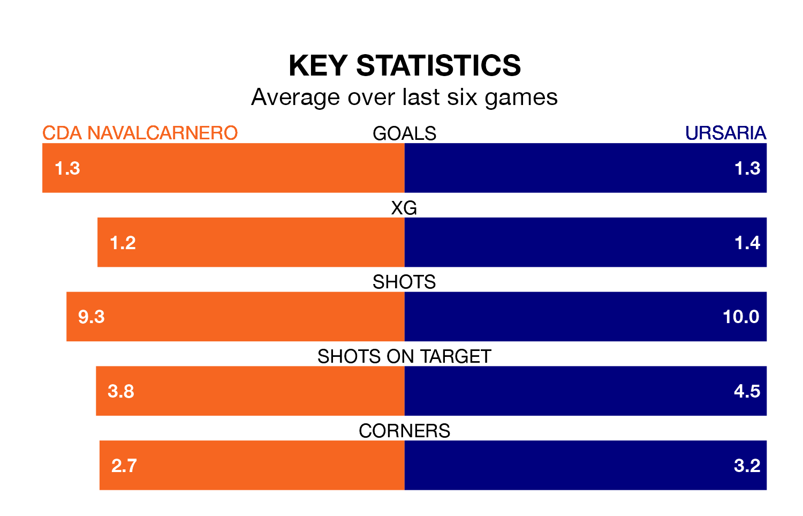

CDA Navalcarnero face Ursaria on Sunday seeking to protect their formidable unbeaten run in the Segunda División RFEF Group 5.
CDA Navalcarnero are unbeaten in nine, with four wins and five draws, ahead of the 11am kick-off.
They face an Ursaria team who have won five and lost four over the same number of games.
With 31 goals in 32 games so far this season, CDA Navalcarnero are scoring at below the league average rate with 1.0 goals per game. And they are conceding at an average rate, letting in 34 goals at a rate of 1.1 per game.
Ursaria are also below average scorers, with 1.0 goal per game, compared to a league average of 1.1. They have conceded 1.2 goals per game.
The hosts are 13th in the table after 32 games, of which they have won nine and drawn 13, earning 40 points.
The away side are one place ahead of CDA Navalcarnero in 12th, with 11 wins and eight draws putting them on 41 points.
CDA Navalcarnero's last match was on Sunday, a 2-1 win against UD San Fernando, with Agustín Rafael Alonso Cavallaro and Alberto Gutiérrez Borondo getting the goals for CDA Navalcarnero.
Ursaria lost 1-0 against CD Numancia last time out, also on April 21.
Updated: 07:59 (UTC), 26/04/24